- Please Download the Antares Library by clicking the button below. Save the .rar file into your local repository library kedalam penyimpanan lokal komputer Anda.
Download
- pertama lakukan registrasi untuk membuat akun antares klik register now.
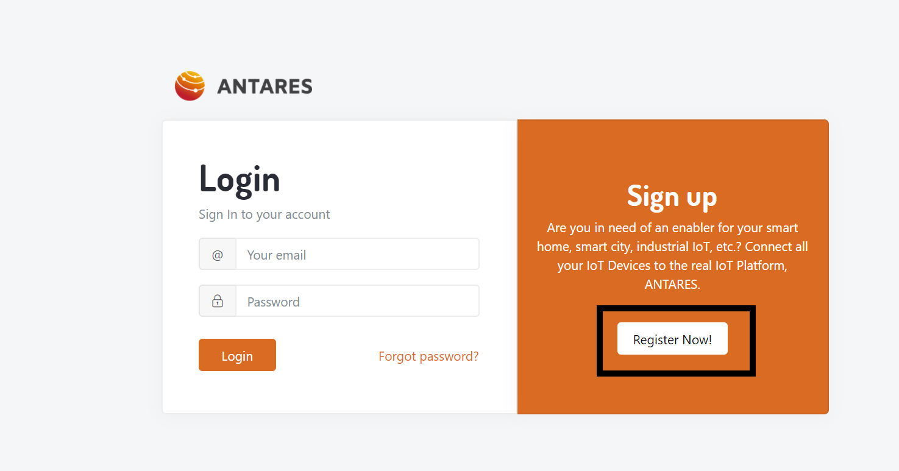
- Selanjutnya isi email, password lalu nama pada Antares dan klik tombol create account dan tunggu hingga ada pemberitahuan. 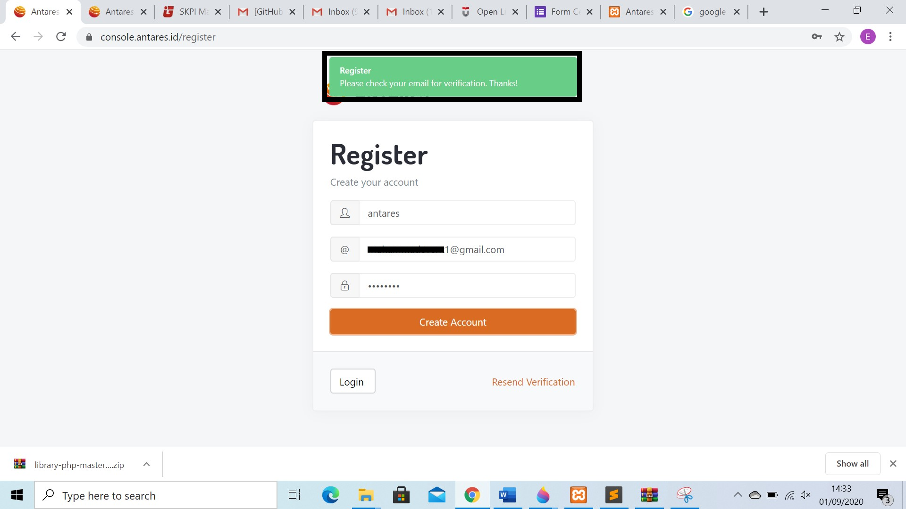
- Selanjutnya buka email untuk verifikasi akun antares. 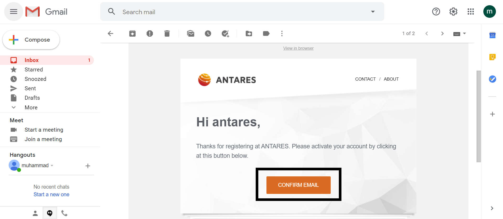
- Setelah verikasi selesai, Login akun Antares yang telah anda buat 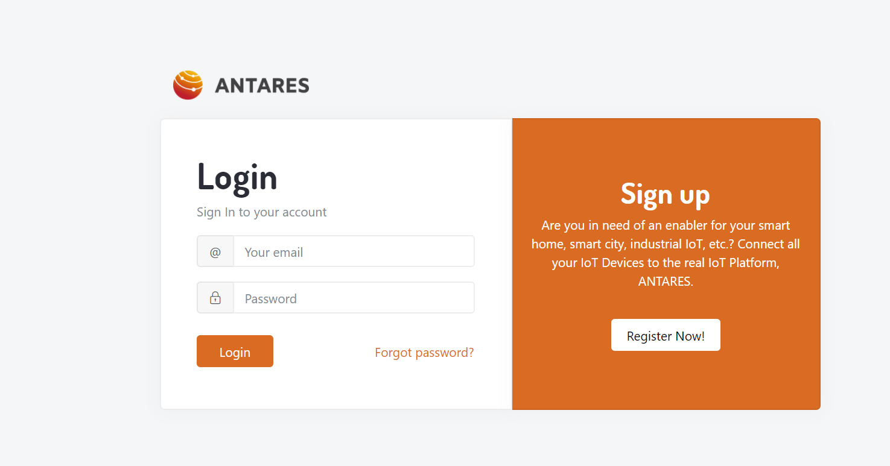
- Setelah login akun Antares Langkah selanjutnya adalah klik account, contoh ditunjukan pada gambar di bawah ini 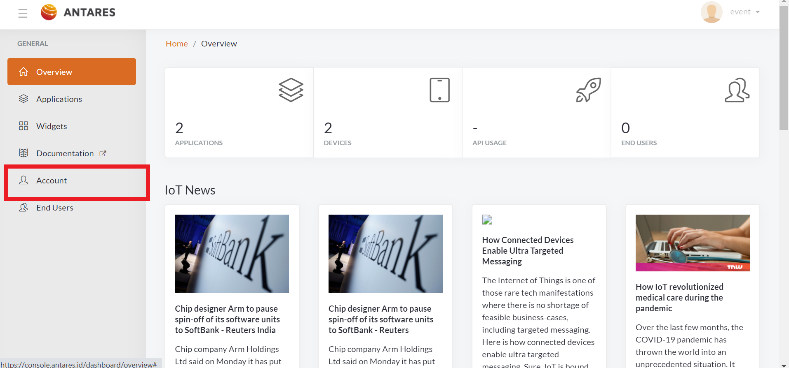
- Setelah klik akun akan muncul Access Key lalu klik save access key untuk menlanjutkan ke Langkah berikutnya 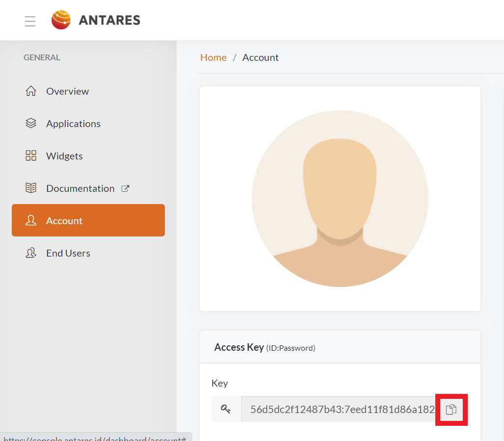
- Buat application, jika anda sudah membuat application, abaikan dan lanjutkan ke proses selanjutnya. 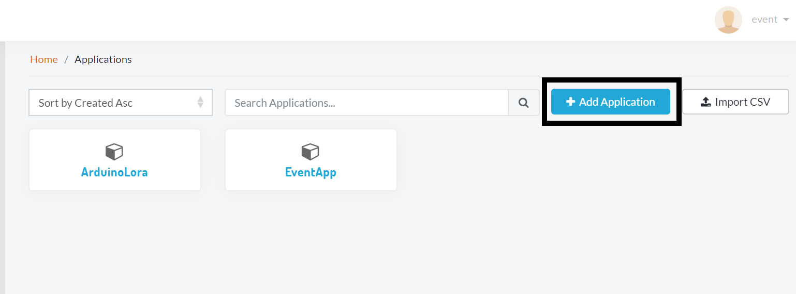
- Selanjutnya klik add untuk mencreate application pada antares platfrom. 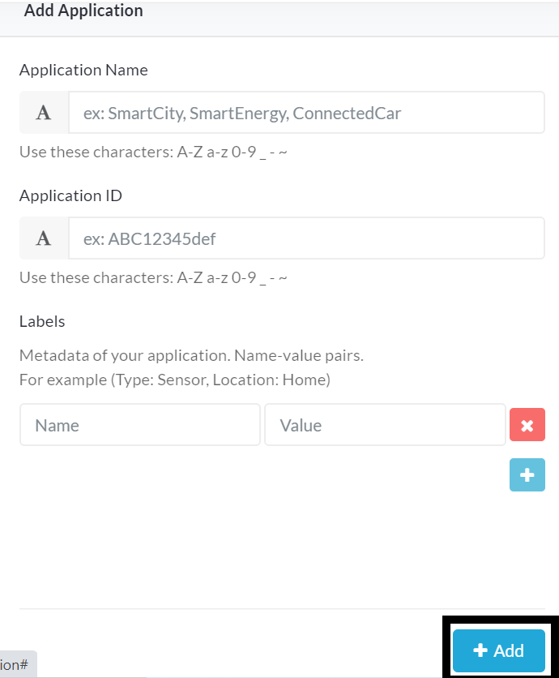
- Buat device, jika anda sudah membuat device anda bisa mengabaikan proses ini dan melanjutkan ke langkah selanjutnya. 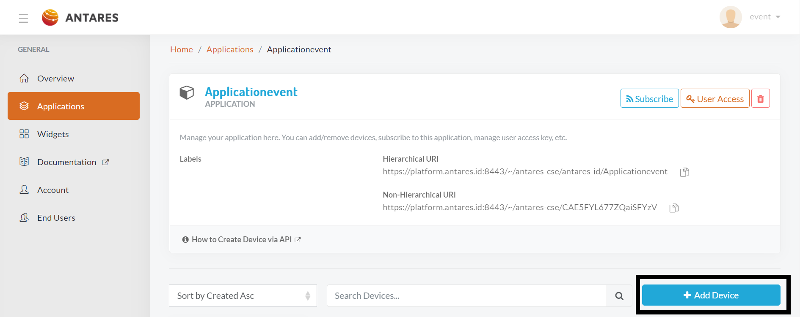
- Selanjutnya klik add untuk mencreate device pada antares platfrom. 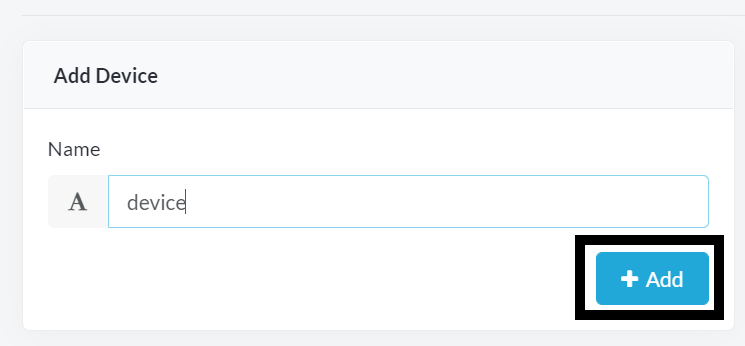
- Selanjutnya extract library php yang sudah di download lalu copy ke C:\xampp\htdocs, pada tutorial ini xampp di install pada direktori C. 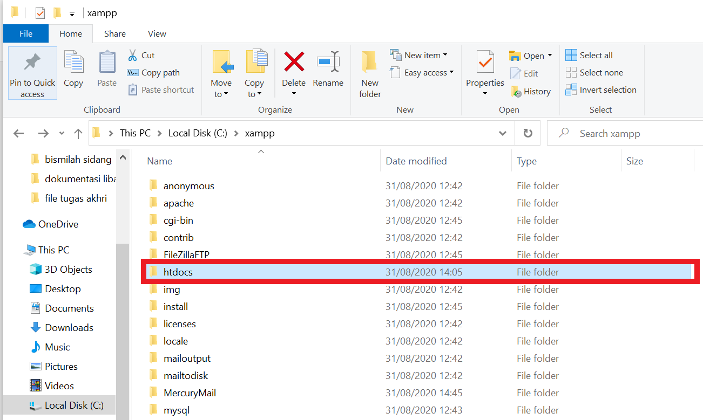
- Selanjutnya buka xampp lalu nyalakan module apache dan tunggu hingga module berwarna hijau, contoh gambar seperti dibawah ini. 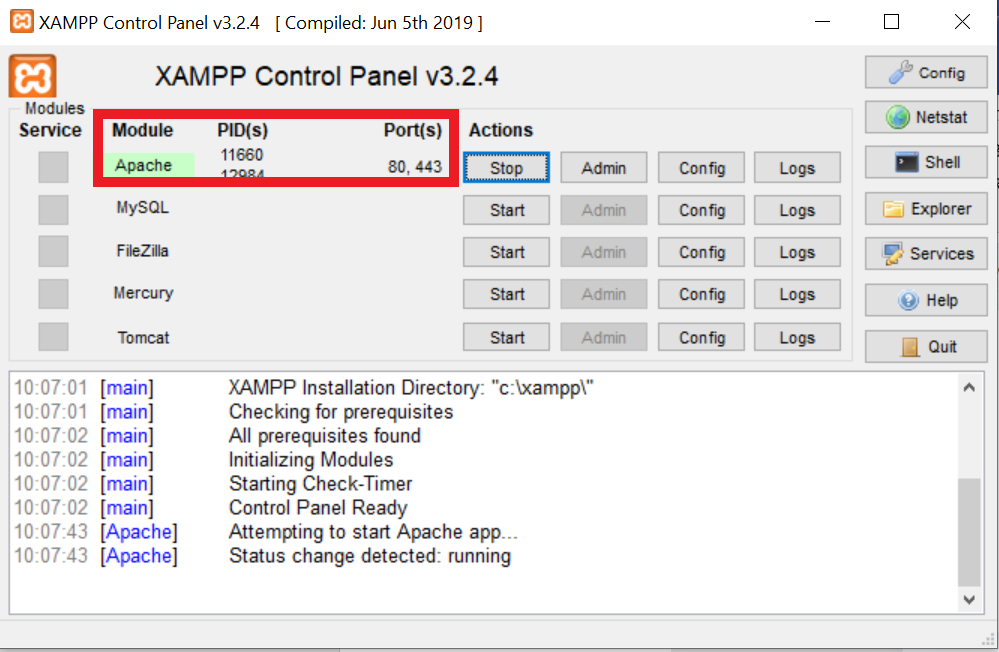
- Selanjutnya buka aplikasi sublime lalu drag antares.php dan indeks.php yang sudah di copy pada htdocs xampp.
for($i = @; $i < $count_temp; $i++){
$cin = curl_init();
curl_setopt_array($cin, array(
CURLOPT_URL => "https://platform. antares. id:8443/~/antares-cse/antares-id/$projectName/$deviceName"."/?ty=23&cnt=2&rn=$deviceName&nu=$newSubs".$temp_url[$i],
CURLOPT_RETURNTRANSFER => true,
CURLOPT_ENCODING => "",
CURLOPT_MAXREDIRS => 10,
CURLOPT_TIMEOUT => 0,
CURLOPT_FOLLOWLOCATION => true,
CURLOPT_HTTP_VERSION => CURL_HTTP_VERSION_1_1,
CURLOPT_CUSTOMREQUEST => “UPDATE”,
CURLOPT_HTTPHEADER => $header,
));
- Langkah selanjutnya buka indeks.php lalu paste access key yang sudah di copy pada account Antares.
<?php
include('antares-php.php');
$antares = new antares_php();
$antares->set_key('10f9b36c4320a16e:57cdfceb69b0bfdc');
$datetime = $_POST["datetime"];
$subs = $_POST["subs"];
$newSubs = $_POST["newSubs"];
));
- Pada library php terdapat beberapa fungsi yaitu fungsi mengirim data, fungsi membuat application, fungsi membuat device, fungsi menghapus application, fungsi menghapus device, fungsi mengambil data Sebagian, fungsi mengambil data sepenuhnya,fungsi Discover all data, fungsi Discover all device dll.
- Untuk mencoba fungsi maka buka command pada sejumlah fungsi pada library php.
$yourdata = '{"Sensor1" :60, "Sensor2":50}';
$antares->send($yourdata, 'Device', 'Applicationevent');
//Uncomment below to test
//$antares->appCreate('NyobaDeui');
//$antares->deviceCreate('nyoba2','EventApp');
//$antares->appDelete('ntap');
//$antares->deviceDelete('nyoba2','EventApp');
//$yourdata = $antares->get('nyoba','EventApp');
$yourall = $antares->get_all('Device', 'Applicationevent');
));
- Untuk mencoba fungsi pada tutorial ini mencoba fungsi mengirim data ke Antares.
$yourdata = '{"Senso" :60, "temp":50}';
$antares->send($yourdata, 'Device', 'Applicationevent');
- Pada code diatas dijelaskan untuk fungsi your data adalah data yang akan dikirim ke Antares, lalu untuk fungsi Device adalah nama device yang telah dibuat, dan Applicationevent yang berwarna kuning adalah nama application yang telah dibuat, Ketika semua sudah di ganti dengan device yang telah anda buat pada Antares maka save file tersebut.
- Selanjutnya buka aplikasi pencarian, dalam tutorial ini aplikasi pencarian menggunakan aplikasi chorme lalu copy kan link berikut : http://localhost/library-php-master/index.php.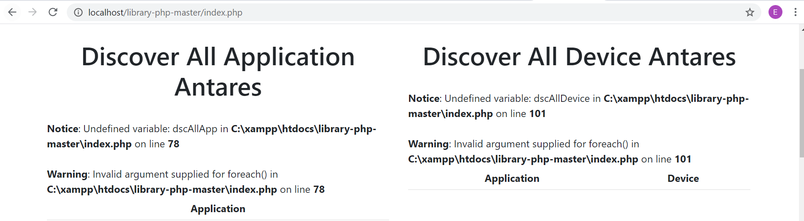
- Lakukan refersh untuk mengirim data ke Antares.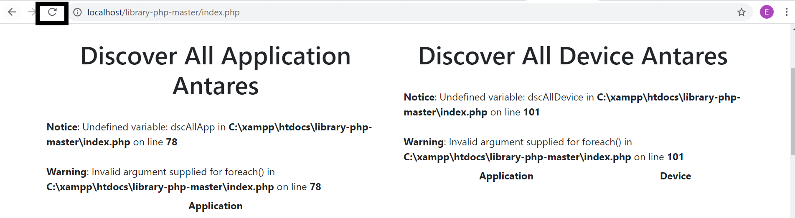
- Setelah melakukan refersh, buka Antares platfrom untuk melihat apakah file ke kirim ke Antares atau tidak.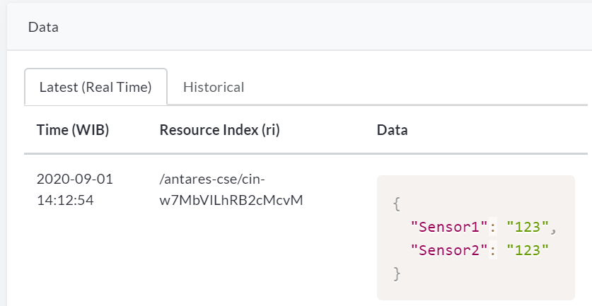
- Selanjutnya kita akan mmengambil data pada Antares, maka buka Kembali sublime lalu untuk mencoba fungsi mengambil data penuh adalah sebagai berikut.
$yourall = $antares->get_all('Device', 'Applicationevent');
- Lakukan refersh Kembali pada aplikasi pencarian anda, kemudian cari nama get all data Antares, jika anda menemukan data maka selamat proses pengambilan data di Antares telah berhasil 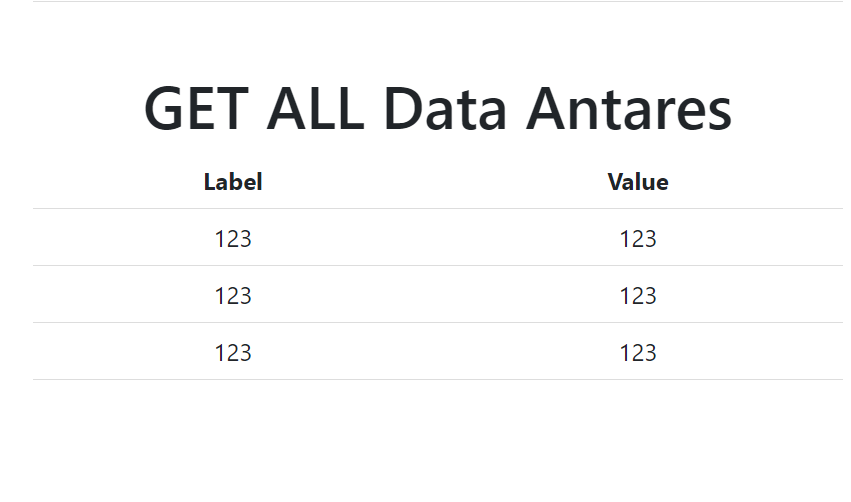